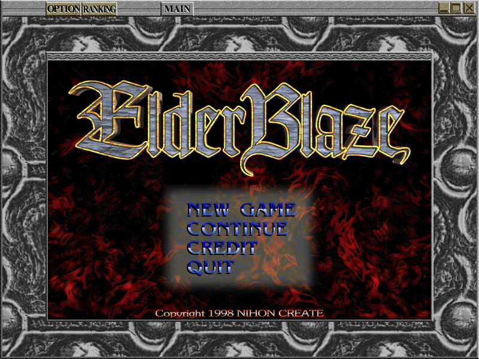
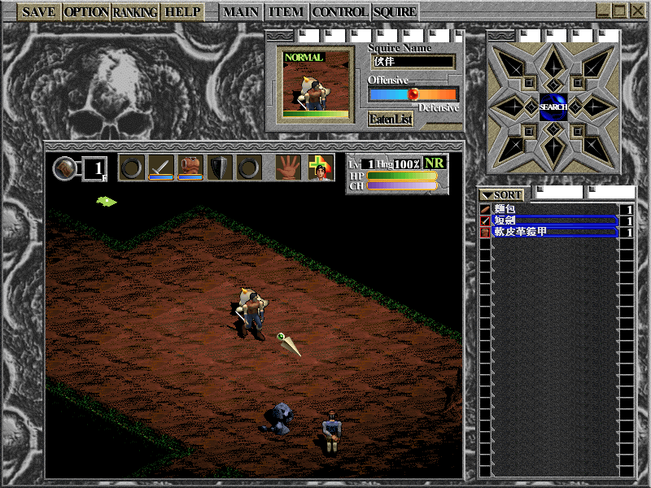

名稱：古神之印／古神的封印／古神之封印／遠古的火焰／火焰鋼甲兵 (Elder Blaze，中文版)
簡介：Nihon Create 1999年出品的角色扮演遊戲，由業訊中文化並代理發行，以3D斜角畫面
呈現，採單人回合制方式戰鬥 [待補]。


備註：本版為添加音軌版光碟，合併了原始繁中版光碟與日文版音軌。
保護：光碟，破解碼（破解後一律使用MIDI音樂，即使選擇CD演奏）：
E_Blaze1.exe
C4 18 E8 5D 04 00 00
-- -- 90 90 90 B0 01
備註：繁中版改自日文1.10版，亦即第2版Elder Blaze98，該版本有支援CD音軌與MIDI，但
繁中版光碟實際並未燒錄音軌，導致選擇CD演奏音樂時會沒有音樂，只能選擇不使用
CD改用內定的MIDI音樂。若想使用CD音樂，可移植日文版光碟音軌來解決。